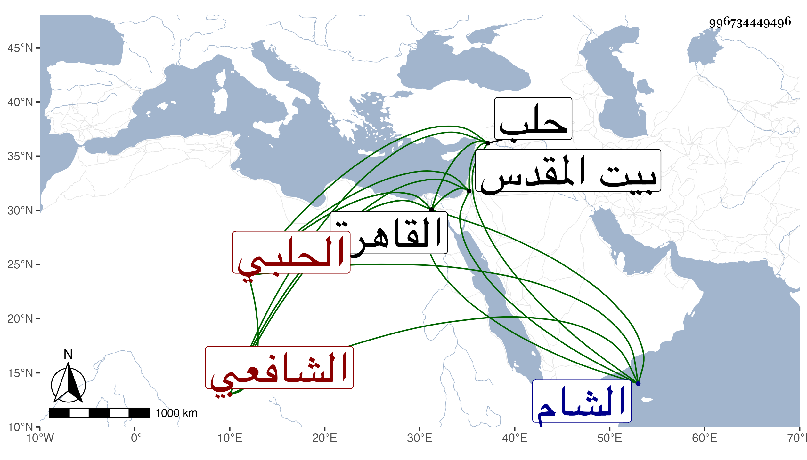

0902Sakhawi.DawLamic.ITO20230111-ara1.EIS1600.996734449496
Biography ID: 996734449496
230
عمر بن أحمد بن صلح بن أحمد بن عمر بن يوسف أو أحمد الزين بن الشهاب بن الصلاح أبي النسك الحلبي الشافعي الماضي أبوه وأخوه صلح ويعرف كل منهم بابن السفاح سبط الشرف موسى بن محمد الأنصاري . ولد في ذي الحجة سنة خمس وتسعين وسبعمائة بحلب ونشأ بها فقرأ القرآن عند الشمس الغزي والأعزاري وغيرهما ، وحفظ التنبيه وألفية ابن مالك وغيرهما عرض على جماعة وأحضر في الثالثة على عمر بن أيدغمش بل سمع على ابن صديق وبالقاهرة على الشرف بن الكويك في آخرين ، وحج مرارا وزار بيت المقدس ودخل القاهرة قديما وحديثا غير مرة واشتغل بالمباشرات من سنة ثلاث وثلاثين أو قبلها بقليل وتنقل في الوظائف ككتابة السر ونظر الجيش وغيرهما ببلده ونظر الجيش بالشام ، ولم يشتغل في العلم إلا قليلا ولذا كان عاريا منه ووصفه بعض أصحابنا بالمروءة التامة والشهامة والعقل والكرم ، وقال شيخنا في ترجمة أبيه من معجمه وكان قد انتهت إليه رياسة الحلبيين بها ولأولاده انتهى . وقد حدث سمع منه الفضلاء بل سمع منه شيخنا في سنة ست وثلاثين حديثا وكفاه فخرا بهذا وأما أنا فقرأت عليه بالقاهرة وبحلب أشياء ولاشتغاله بالديون والخمول بسبب توالي جره الأموال إلى أرباب الدولة تغير كثير من أوصافه وكان في أول أمره بزي الجند فلما استقر في المباشرات دور عمامته ، ومات في رمضان سنة ست وستين عفا الله عنه وإيانا .
